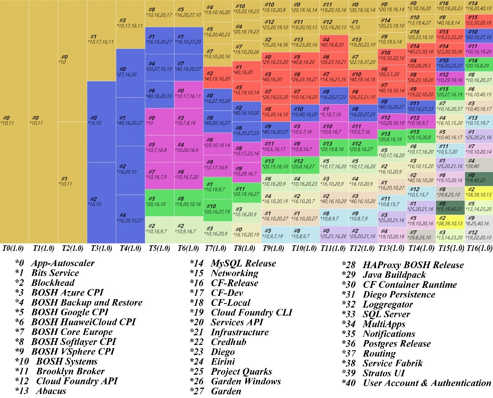
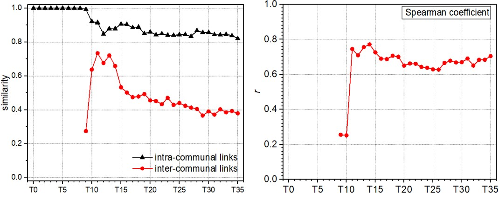

开源社区的集体智慧
本仓库用于发布和展示课题组对于“开源社区集体智慧”相关研究工作的成果。随着信息技术的进步，开源软件应用遍及人工智能、无人机、虚拟现实等诸多领域。据 Gartner 公司调查显示，99%的组织在其 IT 系统中使用了开源软件；Sonatype 公司的统计分析指出 80%-90%的企业应用是由开源技术构成。近来兴起的云计算平台与大数据工具往往是基于不同语言的开源软件，如 Openstack、Apache Spark。开源软件逐渐成为继摩尔定律和互联网化之后推动 IT 产业发展的又一内在驱动力。基于Web2.0/3.0 的各类在线社区是推动开源软件形成和发展的主要平台。由此，开源软件社区引起了社会各界的广泛关注。在我国，“十四五”规划和2035远景目标首次明确将“支持开源社区发展”列入国家总体发展规划纲要之中，不仅体现了开源社区对于我国科技发展的重要战略地位，也标志着我国开源社区发展进入新的阶段。企业层面，诸如华为、腾讯、阿里等公司也大力发展各自的开源项目社区。在企业层面，诸如腾讯、阿里巴巴等公司也大力发展各自的开源项目社区。除此之外，近年来国内外学者关于开源软件社区治理结构、人员行为、参与动机等方面的密集探讨也充分反映出学界对开源软件社区相关问题的关注。
开源软件社区的核心特点是：在缺少中央调控的情况下，社区成员通过彼此间自发的交互活动（交流与协作），形成了个体智慧到群体智慧涌现的组织结构，从而完成了复杂问题的发现与求解。进而，在众多社区成员围绕特定知识开展的交流与协作活动中，所形成的自组织工作模式和治理结构是开源软件社区集体智慧产生的基础和根本。对此，本研究工作从多层复杂网络视角出发，围绕 宏观层面的社区成功与人员交互模式之间的关系，以及微观层面的社区成员交互机制展开分析，探究开源软件社区集体智慧涌现机制。
开源软件本质上是由开源社区成员的集体智慧产物，其产生与发展与社区成员的自发分工协作密不可分，相应开源项目的成功成为社区成员集体智慧的外在表现。现有研究工作主要围绕项目属性与社区成员属性展开，忽略了社区成员社会化这一特点。同时，基于开源社区复杂自适应特点的相关研究聚焦于宏观特定网络状态或微观特定个体对于项目成功的影响，对于成员间分工协作的区分并不明确。对此，项目组将开源项目成功区分为技术成功和商业成功两方面，提出了社区成员分工协作对于项目不同阶段成功影响的理论模型，如图1所示。

图1 理论模型
通过收集Github平台537个开源项目数据，利用层次线性回归模型分析了社区成员分工协作对于项目技术成功（代码提交次数）和商业成功（代码引用次数）的作用。
研究结果表明，社区成员分工方面，技术分工的明确度正向影响项目技术成功。由于专业化分工使得开发人员中社团划分的更为清晰，此时社区成员更清楚自己的角色定位从而表现出稳定的贡献行为，进而促进项目技术成功。社区成员地位分工差异度正向影响项目技术成功，即较高的地位差异更有利于成员做出贡献从而促进项目技术成功。由于项目团队内部存在隐性的“精英结构”，地位较高的开发者期望通过代码贡献保持更高的决策权，外围的开发者也期望通过代码贡献望跻身精英团队。此外，技术分工的明确度和地位分工的差异度均对项目的商业成功有着积极的影响，成员明确的技术分工使得开发团队能够在高动态的环境中响应用户的动态需求后在更短的时间内完成开发任务，同时明确的技术分工也可以提高成员的学习效率和处理问题的速度，促进项目商业成功。
社区成员协作方面，成员协作强度和协作参与度均正向影响项目技术成功。协作强度与参与协作的人数增多容易刺激成员想法的诞生，这对于内部知识集的流动起到关键作用，同时协作强度和协作参与度的增大可以进一步激发内部成员的学习热情，成员之间可以基于协作快速的寻求新的问题解决方案，这也有利于自身能力的快速提升，进而影响项目技术成功。此外，协作强度和协作参与度均正向影响项目的商业成功，成员之间通过加强彼此间的协作以快速的寻求新的问题解决方案，缩短了开源项目自身在响应用户动态需求的时间，相应可以更高质量，更快速度的响应用户需求。
社区成员分工协作对项目技术成功和商业成功的积极影响存在差异性。成员协作强度对于项目技术成功的积极影响最为明显，成员地位分工的差异度和成员协作参与度次之，成员技术分工的明确度正向影响相对较弱。不同于项目的技术成功，成员地位分工的差异度对于项目商业成功的积极影响最为明显，成员协作强度与成员技术分工的明确度次之，成员协作参与度的正向影响相对较弱。
通过收集Cloud Foundry、Angular、Vue.JS、OpenStack等多个大型的成功开源社区开发者提交记录，结合软件版本发布周期，利用开发者在相同文件上的代码协作构建了开源社区交互网络，并发现大型开源软件社区可能具有共性的协作模式，即网络的最大连通子图会呈现出多模块的“核心—边缘”结构，且模块的演化（涌现、发展、合并）与项目内在关联。
以Cloud Foundry社区为例，图2中，交互网络的社区在软件不断迭代的过程中展现出了延续性的发展，并且通过社区合并实现了社区规模的扩张。图3进一步分析了交互网络社区与项目之间的关联性。可以看出每个社区代码集中提交的子项目较好地保持了延续性,并且这些子项目往往具有一定的软件功能相关性。上述结果说明交互网络中的社区往往针对软件的特定功能将不同项目进行组合，进而展开知识（技术）协作。当新功能与现有功能关联性较强时会出现交互网络的社区合并；新功能独立性较强时，往往会有新的社区涌现出来完成开发任务。相应地，至少在本课题所检测的开源社区中，促成社区集体智慧涌现的协作模式并不是现有研究中提出的扁平和自由的组织结构，而是完全自由和严格分工之间的一种权衡。简言之，社区成员可以根据自身技术背景自由选择参与项目，但是工作类型（如代码贡献或行为协调）并不因个人偏好而改变，通常是取决于代码贡献数量和交互网络中的地位。
图2 交互网络社区演化
图3 交互网络社区演化与项目的关联性
开源社区的核心理念是自由和开放，进而社区成员具有流动性强、变化性大的特点，这必然会导致社区成员交互网络结构状态的变化，从而影响社区集体智慧的形成。由此，对开源社区在一系列软件开发周期内的交互网络的结构稳定性进行了分析，以探查维持社区交互网络动态稳定性的人员轮换机制。
以Angular社区为例，图4给出了社区成员交互网络的全局效率（Eg）和局部效率（El）的变化情况。可以看出，社区成员交互网络仅通过少数的连边就可以实现全局效率接近于同规模随机网络，局部效率介于同规模规则网络和随机网络之间。结合研究内容（2），可以基本确定开源社区交互网络持续呈现出经济的模块化小世界状态，这保证网络通过较低的连边成本就可以实现局部和全局的知识流动与整合，在极大程度上推动了社区层面知识的形成。
图4 社区成员交互网络效率
图4 核心成员对于网络的整合作用
图6 核心和非核心成员保有率
继而，提出了局部核心度（z）和连接度（p）用以在软件版本迭代过程中衡量不同类型节点对于网络状态的维持作用，发现每个软件版本对应的网络中总是存在一部分（30%左右）节点（即核心节点）构成了一个紧密连接的内聚核，相应网络社区围绕局部核心形成，社区之间的联系由连接者参与形成（如图5所示）。在网络演化过程中（图6），社区核心成员拥有较高的保有率（50%~70%），当有核心成员退出时，其位置会被现有的核心成员与一小部分非核心成员替代；而外围成员的保有率很低（不足30%），并且代码贡献量占比（11%~24%）也较低，但是为核心成员的涌现提供了丰富的人员储备。相应地，成功的开源社区往往展现出核心成员“整体大稳定，动态小调整”的人员轮换机制，从而维持了社区交互网络的演化稳定性。
开源软件是开源社区成员自发协调与合作的集体智慧产物，由此社区成员间的协作机制是推动社区集体智慧形成的根本。以所收集的开源社区提交数据为基础，利用数据解析与深度学习相结合的方法，进一步探查了开源社区成员协作网络的演化机制。以spring cloud社区为例对研究发现进行说明。
图7给出了spring cloud社区协作网络的演化特性。根据聚集系数（C）、最短路径长度（L）与模块度（Q）的数值变化，网络演化过程中主要一次呈现出三种不同的状态，分别是松散连接状态（C、L、Q数值均较小），链式结构（C、L、Q数值均呈现明显增长），模块化小世界状态（C值持续增长，L和Q保持稳定）。
图7 网络演化特性
图8 社区内外连边相似性及社区间连边与度的关系
由于开源社区协作网络属于专业化的网络，因此其形成和发展必然与所开发软件需要的技术（知识）密切相关。同时，开源社区不同子项目体现了软件的不同功能，往往需要特定的领域知识。由此，利用社区成员在不同子项目上的代码提交情况来刻画其技术（知识）背景，进而探查网络中社区内外连边的特点，如图8所示。网络演化过程中（图8左图），社区内建立协作关系的开发者之间的技术背景的相似性明显高于社区间建立协作关系的开发者，说明社区内协作关系的形成可能是由同质相吸机制推动，而社区间协作关系的形成则由差异偏好机制推动。此外，社区间协作关系的形成和节点度正相关（图8右图），说明网络中跨社区连接往往由高度节点参与形成。
基于数据解析结果，提出了深度学习框架（图9）检测同质相吸和差异偏好两种机制对于网络的塑形作用。该框架通过两阶段将网络结构和节点属性信息融合为表示向量，将机制探查转化为链路预测，不仅可以解决单纯数据分析仅能够探查现象之间关联性的问题，也可以弥补多主体仿真难以与现实数据对应的不足。
图9 深度学习框架